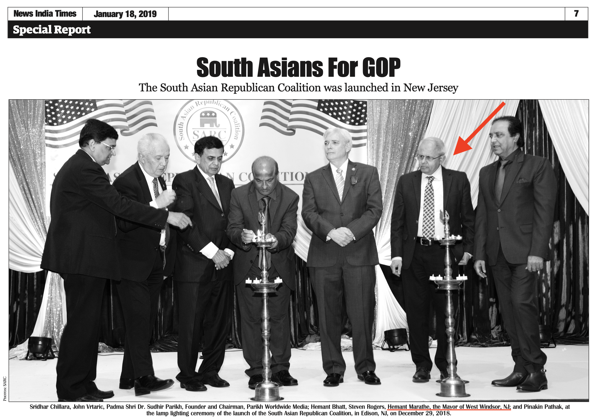

West Windsor Mayor Hemant Marathe Supports President Donald Trump
Launch of South Asian Republican Coalition to Support President Trump
West Windsor Mayor Hemant Marathe helped launch New Jersey's South Asian Republican Coalition, to support Donald J. Trump, on December 29, 2018.
West Windsor was the only New Jersey municipality with an elected official attending the ceremony under their official title.
Coverage of the event
appeared
in News India Times on January 8 and 18, 2019. Click to view PDF of the Jan. 8 or the Jan. 18 articles.
Below is an excerpt from the Jan. 18 article.
West Windsor Mayor Hemant Marathe was also one of only four, among the many
elected officials who represent West Windsor across all levels of
government, who
refused to call for Trump's removal from office following the insurrection of January 6, 2021. The other three were West Windsor Council members Mandel, Geevers and Stevens. All other officials at all levels of government called for Trump's immediate removal.
[Headline] The South Asian Republican Coalition was launched in New Jersey
[CAPTION]
Sridhar Chillara, John Vrtaric, Padma Shri Dr. Sudhir Parikh, Founder and Chairman, Parikh Worldwide Media; Hemant Bhatt, Steven Rogers, Hemant Marathe, the Mayor of West Windsor, NJ; and Pinakin Pathak, at the lamp lighting ceremony of the launch of the South Asian Republican Coalition, in Edison, NJ, on December 29, 2018.
By Staff Writer
-EDISON, NJ
The South Asian Republican Coalition (SARC) was launched with a rally and dinner at the Royal Albert's Palace in Edison, NJ, on December 29. ... SARC was founded by Hemant Bhatt in March of 2018. ... Bhatt is a businessman, political operative, activist and also Founder and President of TrumpMyPresident.com; ...
Bhatt called the supporters of SARC as an extraordinary team ... "What U.S. President Donald J. Trump and his administration are doing will be done by any head of any nation for the best interest of nation and its people," he said. ... We want to bring Mr. Trump back again in 2020."
Steven Rogers, Chairman of America Winning Coalition, Member of President Donald J. Trump Advisory Board 2020 and a retired law enforcement official, gave the keynote address. ... Rogers narrated the achievements and accomplishments of President Trump and his administration ... He blessed the launch of SARC and encouraged the audience to re-elect President Trump. ... SARC is a big part of President Trump's mission in Making America Great Again," he said.
"As I looked at those candles and I looked at the words, I saw that the South Asian Republican Coalition will bring light where there is darkness, strength where there is weakness and faith where there is fear, and that is exactly what President Trump's 'Make America Great Again' agenda is all about.
...
For further information, please visit SARC's website: www.sarcusa.org or send email to info@sarcusa.org

NOTE: This web page is not affiliated with any public official or candidate in the Township of West Windsor, NJ, nor with Donald J. Trump.